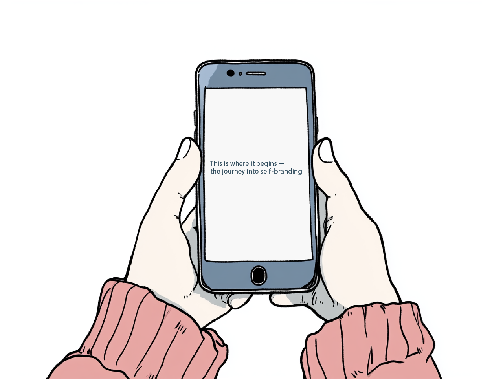

↓ Scroll through the story to begin the interaction ↓
Scene1: Posting
she.was.online
5 months ago

oat latte + my fav hoodie
☁
comfort is the aesthetic
🎀
#thatgirlaesthetic #pinkaesthetic
3,355 likes
157 comments
You don't have to be perfect to begin
✨
10-min walk or a meal — it all adds up
🤍
💗
#thatgirl #selfcare
284 likes
12 comments
Wednesday vibes
kinda productive lol
☕️
still chasing that to-do list
🎀
#morningroutine #thatgirlroutine
312 likes
89 comments
you are that girl, just in your way
💗
#thatgirl #wellness #healthylifestyle
296 likes
13 comments
Positive. Disciplined. Aesthetic.
Through social media, I watched "that girl".
Every part of her life seemed effortless.
It made me wonder — could I do it too?
Ready to share your first post?
Let's see what your version of "that girl" looks like
Make my first post